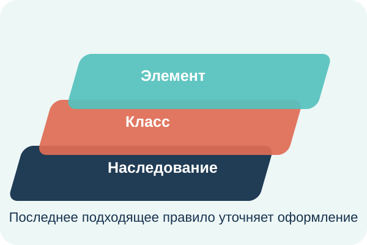

CSS используется для изменения внешнего вида HTML-элементов: цвета, размера, отступов и расположения.

style внутри страницы.style у отдельного элемента.Для этого сайта используется общий файл css/style.css.
Для подписей поверх картинки паспорта используется позиционирование:
position: relative;position: absolute;